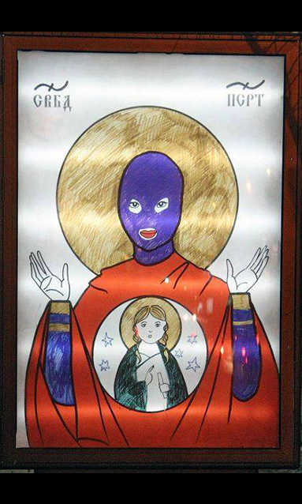
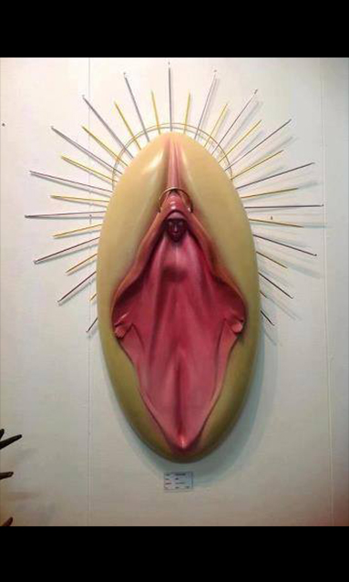
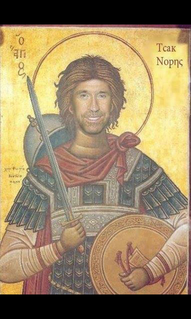
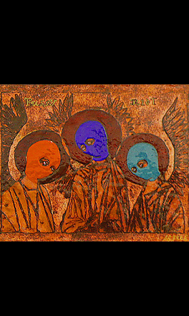
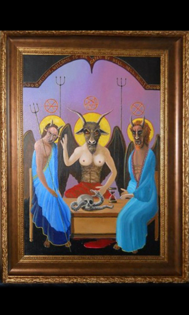
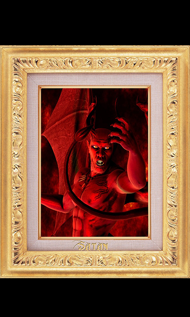

"Sfânta Pussy" - Această icoană este salvatoarea și apărătoarea de oameni răi, de îndoctrinați, pochi ș.a. Simbol al libertății

"Sfânta pistă" - Așa o mai numeau vecinii pe Maria Troăreasa, care ar fi născut de la un duh. Icoană a iubirii și ingeniozității.

"Sfântul Chuck" - Chuck Norris făcea posibil orice lucru chiar greu de imaginat. Icoana ce se folosește pentru a da încredere și putere

"Sfintele Mucenițe Pussy" - Femeile ce au trecut prin chinurile închisorilor și au știut să rămână cu demnitate.

"Îngerul Turbat sau Sfântul Bathomet" - Ajută la căpătarea încrederii de către cei dimprejur și la devenirea liderului lor.

"Regele Satan" - Ajută la orice. Se folosește doar când aveți probleme sau necesități foarte mari. Nu se deranjează cu lucruri simple că poate fi chiar periculos.

"Preafericitul Vitalicus" - Se roagă la această icoană înainte de a face trolling, sau înainte de o emisiune, sau un discurs politic.